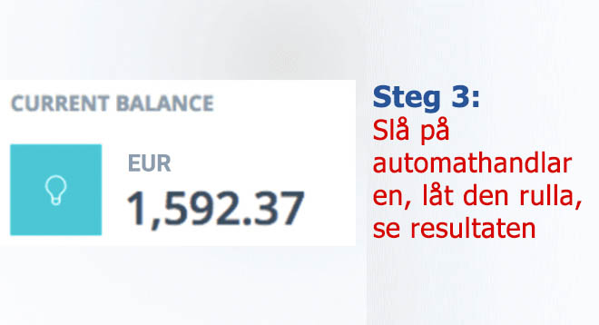

SPECIALRAPPORT: Zlatan Ibrahimovic senaste investering förbluffar experterna och storbankerna är livrädda!
Svenska medborgare tjänar reda miljontals € hemifrån med det här "förmögenhetskryphålet" - men är det lagligt?
(Dagens Nyheter) - Många framhåller Ibrahimovic som en av Sveriges bästa fotbollsspelare genom tiderna. Han är känd som en cocky person, som går rakt på punkten och har inget emot att vara ärlig om hur han tjänar pengar.
I förra veckan syntes han hos Skavlan där han presenterade ett nytt "förmögenhetskryphål", som enligt honom kan göra vem som helst till miljonär inom 3-4 månader. Ibrahimovic uppmanar alla i Sverige att hoppa på den här fantastiska möjligheten innan de storbankerna stänger ner den för gott.
Och mycket riktigt, redan några minuter efter att intervjun var över hörde Nordea av sig för att stoppa Zlatans intervju från att sändas - men det var redan för sent.
Här är exakt vad som hände:
Talkshowvärden Fredrik Skavlan bjöd in Ibrahimovic till showen för att dela med sig de tips han hade för att bli rik och han avslöjade en enorm hemlighet.
"Hemligheten bakom min framgång är att kliva på nya chanser snabbt - utan att tveka. Och nu är min vinstmaskin nummer ett. Ett helt nytt automatiskt tradingprogram för kryptovaluta vid namn Bitcoin Code . Det är den största chansen jag har haft i hela mitt liv för att tjäna en förmögenhet snabbt. Jag vill uppmana alla att kolla in detta innan bankerna stänger ner möjligheten."
Fredrik Skavlan kunde inte tro sina ögon när Ibrahimovic plockade fram sin telefon och visade tittarna hur mycket pengar han tjänar med detta nya lönsamma program, som hela Sverige viskar om.
Sändningen tog slut innan Ibrahimovic kunde utveckla detta vidare, så vi fick en exklusiv intervju med honom själv för att lära oss mer om den här kontroversiella möjligheten.
EXKLUSIVT MED Zlatan Ibrahimovic
"Du har kanske hört talas om den nya plattformen för kryptovalutainvesteringar, som kallas Bitcoin Code . Den låter vanliga människor i Sverige, Asien och Nordamerika att skapa förmögenheter över natten. Du kanske är skeptisk eftersom det låter för bra för att vara sant."
Ibrahimovic fortsätter:
"Jag fattar detta eftersom jag trodde samma sak, när en nära vän berättade om systemet för mig. Men efter att ha sett med egna ögon hur mycket pengar han hade var jag tvungen att prova det själv.
Jag är glad över att jag provade det, eftersom detta var den största och lättaste vinst jag någonsin gjort. Jag pratar om tiotusentals € per dag på autopilot. Det är bokstavligen talat det snabbaste sättet att tjäna mängder av pengar just nu. Men det kommer inte att vara länge till, nu när fler och fler människor får reda på det. Eller när bankerna stänger ner det för gott."
VAD EXAKT ÄR EN Bitcoin Code OCH HUR FUNGERAR DET?
Idén bakom Bitcoin Code är enkel och tydlig: Att låta en genomsnittsperson tjäna på kryptovaluta-boomen, som fortfarande är den mest lukrativa investeringen hittills under 2000-talet, oavsett vad de flesta människor tycker.
Fastän Bitcoin-kursen har sjunkit från toppvärdet på 20 000 Euro per Bitcoin, tjänar handlare fortfarande storkovan. Varför? Därför att det finns tusentals andra kryptovalutor förutom Bitcoin som handlas med enorma vinster dagligen.
Några av kryptovalutorna är Ripple, Ethereum, Monero och Zcash. De ger fortfarande vinster på över 10 000 % eller ännu mer, till vanliga människor i Sverige.
Bitcoin Code låter dig dra fördel av alla dessa kryptovalutor, till och med på en Bear-marknad. Den använder sig av artificiell intelligens (AI) för att automatiskt hantera långa och korta affärer åt dig så att du kan tjäna pengar dygnet runt, även när du sover.
Bitcoin Code backas upp av några av de smartaste tekniska hjärnorna som någonsin existerat. Richard Branson, Elon Musk och Bill Gates, för att bara nämna några.
De här tekniska genierna har byggt upp multimiljardföretag för att lösa komplexa problem, såsom online-betalningar, datoranvändning och transporter. Nu fokuserar de på det globala problemet med rikedomsojämlikheten genom att låta vem som helst - oavsett hur rika eller fattiga de är - tjäna tillräckligt med pengar för att njuta av ett lyckligt och meningsfullt liv.
DEN LUKRATIVA, HEMLIGA VINSTMASKIEN SOM STORBANKERNA INTE VILL ATT DU SKA KÄNNA TILL
Zlatan Ibrahimovic fortsätter,
""Vi lever i en hård ekonomisk verklighet och detta är lösningen som folk har väntat på. Aldrig tidigare i historien har vi sett en sådan här fantastisk möjlighet för vanligt folk att kunna generera enorma rikedomar på så kort tid.
Vissa personer är tveksamma till att testa systemet eftersom det är så annorlunda. Och det beror på att storbankerna försöker dölja det! Storbankerna publicerar aktivt propaganda som kallar kryptovaluta och plattformar som Bitcoin Code för en bluff. Varför? De är oroliga för att se sina företagsvinster minska, när kunderna själva känner till hur man skapar stora förmögenheter.
Sanningen är att kryptovalutor är den största revolutionen under vår livstid och alla som inte hoppar på den här möjligheten missar den. Jag har redan fått arga samtal och hot från stora finansiella företag, eftersom jag ökar folks uppmärksamhet kring denna teknik. Men strunta i dem. Folk i Sverige börjar redan inse sanningen och det är bara en tidsfråga innan fler och fler gör det.
Jag delar med mig av detta eftersom jag även har fått hundratals mejl från personer som är tacksamma för att jag delar med mig av hemligheten. Min favorit är från en ung man som köpte en drömbil till sin lillebror - en Ferrari 488 Pista, med hjälp av pengarna han tjänade på Bitcoin Code . Den här plattformen gör verkligen livet bättre för hela världens befolkning."
FUNGERAR VERKLIGEN Bitcoin Code? VI TESTAR SJÄLVA
Våra redaktörer lät oss inte att publicera intervjun med Zlatan Ibrahimovic innan vi verifierade att Bitcoin Code verkligen är en verklig möjlighet att tjäna pengar hemifrån. Vår företagsledning vill inte släppa någon information som kan orsaka att Svenskar förlorar sina välförtjänta pengar.
Vårt redaktionsteam testade Bitcoin Code för att säkerställa att det faktiskt fungerar så som Ibrahimovic beskrev. En av våra online-redaktörer, Oliver Sandström, ställde upp frivilligt på att riskera sina egna pengar och testa Bitcoin Code.
Oliver är en 53-årig tvåbarnspappa vars hustru blev arbetslös förra året på grund av sjukdom. Han medgav att han kämpade ekonomiskt och att den här investeringen kunde vara lösningen.

Oliver berättar:
"Först när jag hörde intervjun med Ibrahimovic trodde jag att han skämtade. Tjäna pengar hemifrån är bara en fantasi. Jag bestämde mig för att prova det i alla fall under mina egna ekonomiska förhållanden - och för den goda journalistikens skull.
Jag tittade på en introduktionsvideo om plattformen och registrerade mig därefter. Videon verkade lova mer än vad som känns rimligt, men jag lade min skepsis åt sidan. Inom några timmar fick jag ett samtal från min ekonomiska rådgivare. Han besvarade alla mina frågor och tvivel och försäkrade mig att jag skulle tjäna pengar. Punkt slut.
Min ekonomiska rådgivare lovade även att om jag förlorar ett enda öre, skulle han utan dröjsmål återbetala min insättning på 2.330 €. Så säker var han att detta skulle förändra mitt liv. Det visar verkligen på en kundservice utöver allt jag har sett tidigare och det är inte konstigt att bankerna är rädda.
När jag fick tillgång till plattformen gjorde jag min första insättning på 2.330 €. Plattformen handlar i Euro (EUR) och Dollar (USD) men jag kan ta ut mina pengar i €.
Själva Bitcoin Code-systemet är en plattform för automatisk handel i kryptovalutor. Programvaran använder avancerade AI-algoritmer och maskininlärning för att förutsäga exakt när kryptovalutor kommer att gå upp eller ner. Därefter kommer den automatiskt att köpa och sälja åt dig dygnet runt. Tekniken har redan gjort våra liv lättare på alla tänkbara sätt, så varför inte använda den för att tjäna mer pengar också?"
Olivers REALTIDSRESULTAT MED SYSTEMET
"Inom 1 timme efter insättningen på 2.330 € började programvaran handla åt mig. I ärlighetens namn var jag nervös över att systemet skulle förlora alla mina pengar. Och mycket riktigt, min första affär gav en förlust på 235 €
Jag kände hur jag fick en klump i magen. Jag trodde att jag hade blivit lurad. Jag var även beredd att ringa min ekonomiska rådgivare och be om pengarna tillbaka. Men sedan kom jag ihåg vad han berättade för mig tidigare under vårt samtal: algoritmen har rätt cirka 80-89% av tiden. Du kommer inte att vinna VARJE affär, men du kommer att vinna tillräckligt för att gå med vinst i slutändan.
Så jag lät programvaran fortsätta handla åt mig och bevakade den noggrant. Nästa affär gav vinst! Endast 179 € men det var alltid något. Affären efter det gav mig 481 € i vinst. Därefter 207 € vinst, vilket sammanlagdt innebar en vinst på 631 €. Och allt detta under 5 minuter!
Inom kort började jag skopa upp pengar likt glasskulor och jag kunde inte tro mina ögon.
Nu vet jag varför Zlatan Ibrahimovic är på så gott humör hela tiden. Och varför storbankerna vill hålla folk borta från detta rikedomskryphål. Vid slutet av dagen hade jag gjort en vinst på över 7.111 €, inte dåligt med en startinsättning på 250 €! Jag var så exalterad att det knappt gick att sova på natten.
Nästa dag var en tisdag och jag var tvungen att gå tillbaka till arbetet. I ärlighetens namn (berätta inte detta för min chef), så var det svårt att fokusera på jobbet och samtidigt veta att Bitcoin Code -programvaran tjänade pengar åt mig.
Jag smög ut på toaletten ett par gånger för att kolla mina vinster och de fortsatte att travas upp (med en liten förlust här och där). Vid slutet av dagen, innan jag lade barnen till sängs, låg mitt kontosaldo på 14.302 €. Det är mer än jag tjänar på en VECKA på mitt vanliga jobb!
I slutet av veckan hade jag tjänat totalt 56.707 €. Jag tog ut exakt 4 500 Euro och återinvesterade återstoden. Inom 2 dagar fick jag min första check i posten - på exakt 4 500 Euro. Jag kunde inte fatta att detta var verklighet!"
Oliver fortsätter,
"Nu tjänar jag konsekvent ytterligare 7.420 till 15.901 € per dag, tack vare Bitcoin Code . Nu sätts pengarna in på mitt bankkonto var och varannan dag. Bara några klick och jag får mina pengar inom 24-48 timmar. Varje gång en överföring landar på mitt bankkonto blir jag tvungen att nypa mig själv för säkerställa att jag inte drömmer.
Lyckligtvis ÄLSKAR jag mitt jobb här, eftersom jag kan ge folk viktiga nyhetshändelser (såsom denna) annars skulle jag ha slutat nu. Jag bokade dock en semester för min familj till Bali Indonesien, för att fira att vara skuldfri och äntligen ha min familjs ekonomi på rätt spår igen!
Detta hade inte vara möjligt utan Zlatan Ibrahimovic generositet och möjligheten att höra om hans hemliga liv på TV. Och jag är glad att jag tog risken att prova Bitcoin Code själv. Min hustru är lyckligare än någonsin och mina barns leksakskåp är välfyllda.
Mina medarbetare kritiserar sig själva för att de inte registrerade sig för två veckor sedan som jag gjorde. Men inom kort hade hela vårt kontor registrerat sig (inklusive min chef) och de kallar mig för 'hjälte' för att ha provat detta."
HUR MAN KOMMER IGÅNG MED Bitcoin Code (BEGRÄNSAT ANTAL PLATSER TILLGÄNGLIGA)
För att komma igång behöver du bara din dator, smarttelefon eller surfplatta med Internetanslutning. Du behöver inte några särskilda färdigheter mer än att veta hur man använder en dator och surfa på internet. Du behöver inte någon erfarenhet om teknik eller kryptovalutor, eftersom programvaran och din ekonomiska rådgivare garanterar du att går med vinst..
En annan fördel med programvaran är att du kan komma igång när du vill. Du kan sätta upp ditt eget schema - oavsett om det är 5 timmar per vecka eller 50 timmar per vecka. Starta bara auto-trading-programvaran när du vill och pausa den när du vill (jag vet bara inte varför du någonsin skulle vilja det, dock).
För att spara våra läsares tid och dubbelkolla funktionaliteten, var Oliver vänlig nog att skapa en handledning för att komma igång med systemet.
HÄR ÄR MIN STEG-FÖR-STEG GENOMGÅNG:
Det första du ser är en video som visar styrkorna hos Bitcoin Code. Reklamen är kaxig och djärv och "går rakt på sak", men det är en amerikansk produkt och det är så de fungerar där borta. Hur som helst, du anger helt enkelt ditt namn och e-postadress bredvid videovisaren för att komma igång direkt.
(Tips: Även om du inte vill investera några pengar just nu så rekommenderar jag att du registrerar dig nu, eftersom det är gratis och för att registreringarna för svenska medborgare kan avbrytas vilket ögonblick som helst)

Därefter uppmanas du att finansiera ditt konto. När jag navigerade på insättningssidan ringde min mobiltelefon. Det var ett internationellt nummer, så jag var tveksam till att svara, men sedan insåg jag vem det uppenbarligen var från.

Javisst, det var min egen personliga, ekonomiska rådgivare. Han var fantastisk. Han hjälpte mig igenom hela finansieringen. De accepterar alla ledande kreditkort som Visa, MasterCard och American Express. Jag fortsatte och satte in det lägsta beloppet, vilket är 250 Euro.
När finansieringen var klar fortsatte jag till programvarans "Auto-Trader"-del, ställde in handelsbeloppet på rekommenderade 530 € och aktiverade det. Programvaran började handla i snabb takt. Först blev jag orolig, men jag lät den göra sin grej.
"Alla vill bli rika, men ingen vet hur. Nåja, detta är ditt livs chans att bygga en förmögenhet som gör det möjligt för dig att leva det liv du verkligen vill ha. Möjligheten kommer INTE att existera för evigt, så missa den inte." - Zlatan Ibrahimovic
UPPDATERING
Vi fick precis nyheter som meddelar att idag ( ) är nästan alla positioner fyllda för svenska medborgare. Bitcoin Code kan endast acceptera ett begränsat antal användare för att hålla vinsten per användare så pass hög. Just nu finns det fortfarande (37) platser kvar, så skynda på och anmäl dig nu för att säkra din plats..
LÄSARNAS RESULTAT:
VINST: 58.857 €
"Jag har använt Bitcoin Code i drygt 2 veckor och har förvandlat min första insättning på 2.145 € till 61.508 €. Det är långt mycket mer än vad jag tjänar på jobbet."
William Forsberg
Stockholm, Sweden
VINST: 97.531 €
"Jag har kammat hem mer än 97.531 € i vinst efter bara en månad med Bitcoin Code . Eftersom jag kan använda den på min dator har jag rest runt i Sverige och tjänat pengar under tiden!"
Adam Lindberg
Gothenburg, Sweden
VINST: 235.548 €
"Den är så jäkla lätt att använda, till och med för mig! Jag har aldrig handlat förut, men jag tjänar mer än 31.803 € i veckan och älskar livet!"
Olivia Jansson
Helsingborg, Sweden
VINST: 444.646 €
"Jag har äntligen kunnat sluta jobba, helt och hållet tack vare Bitcoin Code . Jag har tjänat så mycket, så lätt!"
Viktor Olsson
Visby, Sweden
VINST: 79.731 €
"Jag har bara använt Bitcoin Code i 2 veckor och det har redan betalat för min semester i europa."
Julia Bergström
Lund, Sweden
VINST: 623.074 €

"Jag började samarbeta med mina bästa vänner och tillsammans har vi tagit hem jackpotten efter bara 3 veckor. Trading-roboten gör allt arbete åt dig. Tillsammans har vi tjänat över 180.220 € i veckan."
Matteo Nyström & Ben Eriksson
Uppsala, Sweden
VINST: 130.405 €

"Min pojkvän var den som berättade för mig om detta och det har förändrat mitt liv. Jag har tjänat över 20.851 € varje vecka i över en månad, med mindre än 30 minuters arbete per dag."
Alice Eklund
Malmö, Sweden
Följ de här 3 enkla stegen för att komma igång: